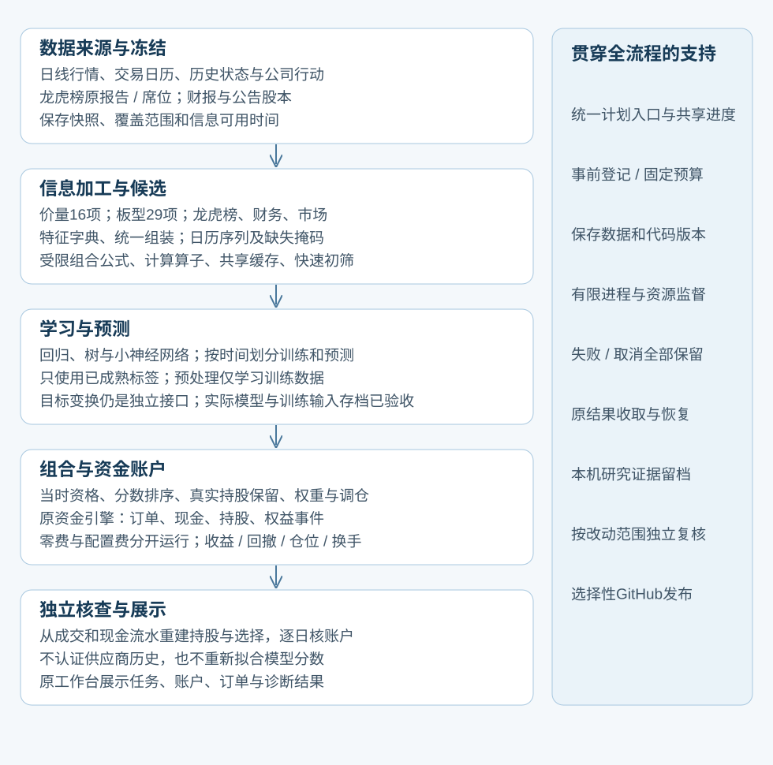

后续补充：项目、Chat、持续规划责任和模型选择统一在Codex施工方式；不是新增固定主管或审批层。
执行系统重构方案（2026-10-12）
本次要解决的是：做一个实验，为什么先后需要复制脚本、找历史文件、请多个 Agent 反复检查，然后才真正计算？新的施工目标是：把这些确定性的工作交给一个稳定的程序；Agent 主要负责研究问题、实现新能力、解释异常和判断结果。
这是施工前的方案。完成情况和实测结果另记在交付报告中。本次没有把旧研究结果当作新成果，也不承诺重构后策略收益变好。
1. 先把整个量化项目摆清楚
最简图：

略详细图：

表达式生成、模型学习、组合研究是不同层。特征不必独立选股盈利才能进入模型。单列选股是可选诊断。最终比较以账户收益和回撤为主；RankIC用于解释预测。模型名单和初始16列不是项目边界。
2. 查了哪些现成经验，具体取什么
以下是已阅读的原始工程文章、官方文档或源码；厂商自报提升不作为本项目的效果证据。
这是工程取舍，不是声称所有框架都已接入。最有用的复用顺序是：先复用本机已工作的执行器，再验证外部组件能替代哪一块。现有SQLite、Python子进程、资源池、pytest足以支撑本次改造。
3. 旧执行方式为什么会变重
已找到的具体机制：
- 同一阶段出现大量prepare/run/close临时脚本；脚本又绑定自己版本的清单、前序收据和时间窗口。
- 默认总控每个研究任务都安排研究、两次独立复核和另一次AI裁决，即使只是确定性的接线或文件核对。
- 已完成表达式批次进入矩阵组装时，又调用完整数值审计；提交和恢复也存在重新审计入口。
- 会话凭据是在任务领取提交到数据库之后才写文件；写文件失败可能留下“已领取但凭据没保存”的麻烦。
- 大量完整历史/日志输出给模型，机器能确认的事情由模型再次叙述和确认。
不能据这些机制推算精确Token账单。平台未提供的用量仍记为未知。
4. 本次实际施工边界和顺序
| 顺序 |
要交付什么 |
怎么确认不是只写了文档 |
| A |
本方案及短AGENTS入口 |
新入口直接指向执行说明；旧V7强制流程明确降为兼容路径 |
| B |
一个持久化计划执行器 |
调用已有Research注册和worker；进度保存在现有研究SQLite中 |
| C |
安全恢复与有限预算 |
中断后关联原实验；失败/取消不悄悄重试；启动次数与时间预算不在续跑时清零 |
| D |
审计复用 |
输入、实现或产物变化使缓存失效；不变结果交接不重复完整数值审计；公式批次原审计不重算表达式，模型和账户按各自原核查范围 |
| E |
简短CLI和领取凭据保护 |
默认只返回步骤状态、实验ID、日志路径；凭据写失败交还任务 |
| F |
清理可再生垃圾 |
列出明确目录、实际字节和删除结果；保护原数据、冻结证据、失败记录、Git与环境 |
| G |
小样本完整运行、恢复反例和一次回归测试 |
真正经过注册、子进程、账户核查；再次执行不产生第二次计算 |
| H |
人能看懂的交付报告和项目导航 |
分清已完成、未完成、清理量及下一步；不把工程通过称为策略成功 |
新执行器首版处理事先准备好的实验提案和已登记实验引用，支持依赖顺序。某步骤生成结果后才能写下一提案的情况，仍由研究者或专用适配器补充下一份计划；本次不写通用代码生成语言或任意Shell执行器。
科学判断不会交给“自动通过”按钮：常规接线和元数据检查由程序处理；新增账户规则、泄漏边界和重要收益结论仍做针对性独立复核。旧总控保留兼容，但不再作为普通工程工作的默认入口。
5. 执行器具体应该怎样工作
例如一个计划有“计算特征→训练模型→账户回测”三个步骤：
- 读取一次有限计划，检查步骤名称、依赖、任务及预算。
- 找到已登记的步骤就继续使用那个实验ID，不创建第二个实验。
- 未登记步骤通过现有Research接口冻结输入和代码，并立即记下实验ID。
- 运行仍由现有worker完成；执行日志写文件。
- 中断时恢复原worker结果。进程是否结束或收据是否完整无法确认时停止这个步骤，不猜测、不重复启动。
- 失败保留原记录和已用预算；研究者需要修正具体问题，不能反复包装成“新预算”。
- 只有核查通过的依赖才允许进入下一步；结果默认给出短状态和定位路径。
- 已完成步骤复用验证证据。缓存省去重复完整审计与数据载入，仍校验文件内容，不能证明策略有用。
旧脚本归档后需要原路径复原时，从索引恢复原始字节；不批量改写旧冻结计划。
本次默认串行数值步骤，现有资源池继续管理内存和线程。没有为了“上千策略”先开上千进程；未来批量生成应把许多候选放进已有有限批次，由向量化和受控数值并行承担计算。
6. 清理规则
| 分类 |
处理 |
| pytest临时目录、Python字节码、lint缓存、重复构建目录、历史浏览器预览profile |
停止相关进程且确认路径后可删除；保存一份精简清理清单 |
| 项目源码、测试、当前虚拟环境、发布Git仓库 |
保留 |
| 原始行情、冻结快照、实验输入/代码/收据、模型和账户产物、失败证据 |
保留；重构不改写历史 |
| 大量旧阶段辅助脚本 |
退出新入口；先查引用和恢复用途。本轮将退休辅助脚本逐一校验后压缩归档；保留当前交接与修复脚本，不破坏旧证据 |
| 旧文档 |
保留原结论；入口标注兼容或历史，避免旧规则继续支配新任务 |
清理不跨出用户授权项目。一次保存清单，不为每个垃圾目录写一篇报告或调用两个复核Agent。
7. 长期架构还有哪些工作，不会被这次重构掩盖
执行层改善后，研究主线仍要修复共同成熟日期，再完成完整132列模型与账户对照。随后：
- 特征层：价格量、板型、龙虎榜集中度及交互、财报等，保留缺失原因和信息时间。
- 自动表达式探索：DSL/遗传或其他生成器在有限预算下产生候选；查重、相似性、缺失、暴露和多重试验记录。
- 模型层：稀疏线性、树、神经网络和适合序列/图的数据适配；不能只凭模型名称扩大投入。
- 组合层：分数合成、中性化、持仓约束与仓位研究；与模型变化分开消融。
- 验证层：按时间隔离、标签结束与purge、已见验证集账本、成本和容量、跨期稳健性。
- 外部复用：Qlib/RD-Agent、成熟回测引擎和实验管理组件逐块试接，以本地反例和等价性验证决定采用。
选择新研究方向仍要主动搜索用户认知之外的资料。有限搜索预算约束计算浪费，不把研究范围永久锁在最初几个模型。
8. 本次验收的硬指标
同一计划再次执行：新增实验=0，新增训练/账户计算=0。
断点恢复：使用原实验，不能重置启动次数和截止时间。
失败：依赖步骤不运行，失败记录可查。
文件或实现被改动：旧审计缓存不能直接通过。
正常工程执行：不自动调用任何LLM；现有Codex会话用量未知，不能承诺整体Token节省百分比。
清理：给出删除目录数和实际字节，不以目录数冒充研究成果。
完整小样本：至少真实跑通一次已有账户路径，再验证复用。
未达到的条目在最终报告明确列出。
固定导航：当前总览 · 完整蓝图 · 工作包计划 · 建设记录